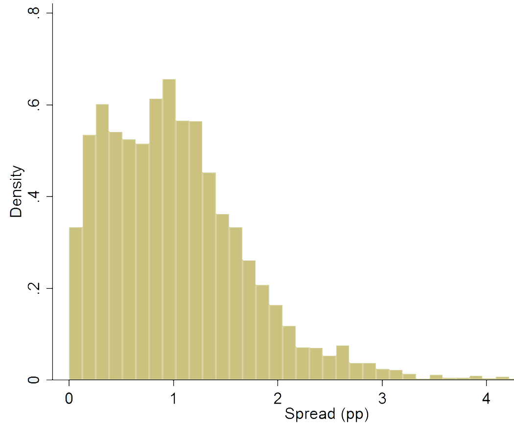

|  |
| Spread of public entity bank loans over similar maturity T-bills |
|
| Private Credit Under Political Influence: Evidence from France |
| with Anne-Laure Delatte and Adrien Matray |
| Formally independent private banks change their supply of credit in the constituencies of political incumbents to improve their reelection prospects. In return, politicians grant these banks access to the profitable market for loans to local public entities in their constituencies. Using French credit registry data over 2007-2017, we find that credit to the private sector increases by 9% to 14% the year before a powerful incumbent faces a contested election. Consistent with politicians returning the favor, banks that grant more credit to private firms in pre-election years gain market share in the local public entity debt market after the election. Our results show that formal independence does not ensure the private sector's effective independence from politically-motivated distortions, if politicians have discretion over rent allocation. |
| In the media (in French): Le Monde, Les Echos, Libération, France Culture. |
|